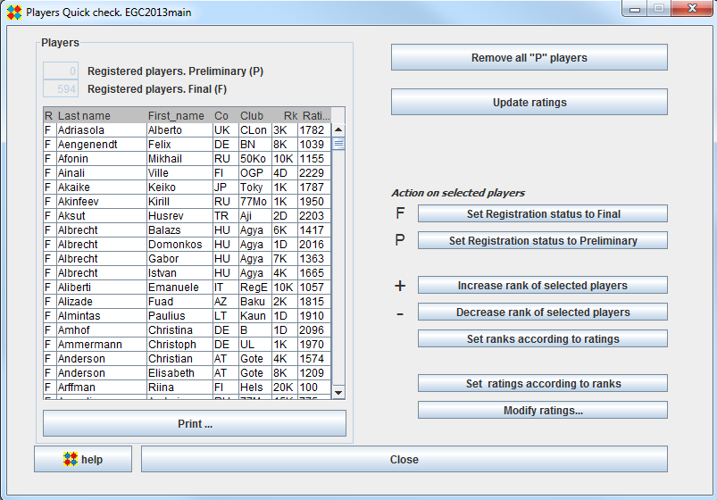

Players Quick check frame
The Players Quick check frame is typically used after registration to quickly check and modify registering status and rank.

In the "Players" panel, select the players you want to modify
Then use buttons on the right or keyboard shortcuts to modify registration status or rank
To toggle participation of a given player in a given round, click the appropriate "V" in the appropriate row and column.
Participation status is modifiable only if the specified player has not been assigned in the specified round.